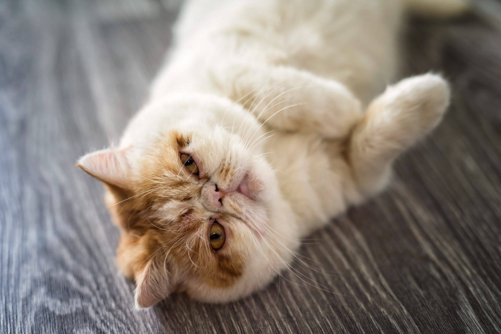

TODO: Transforme o texto "Voltar" abaixo em hiperlink que leva o usuário para a página com o sumário de todos os gatos
Voltar
Com a intenção de ter um gato com temperamento do Persa mas com pelo mais curto e de fácil manutenção com escovas adequadas, como o American Shorthair, realizaram o cruzamento entre estas duas raças, resultando no gato Exótico.